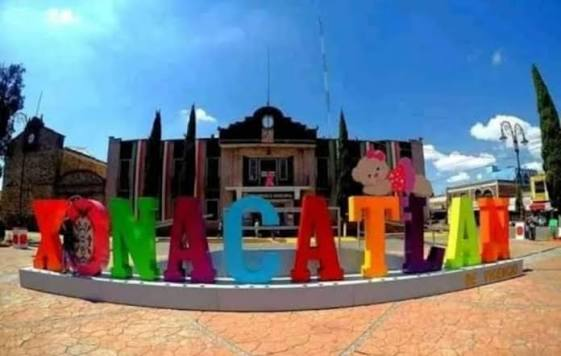
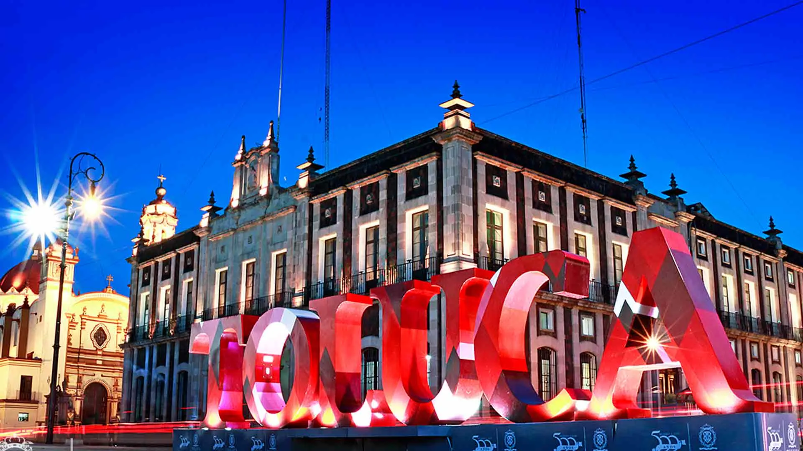
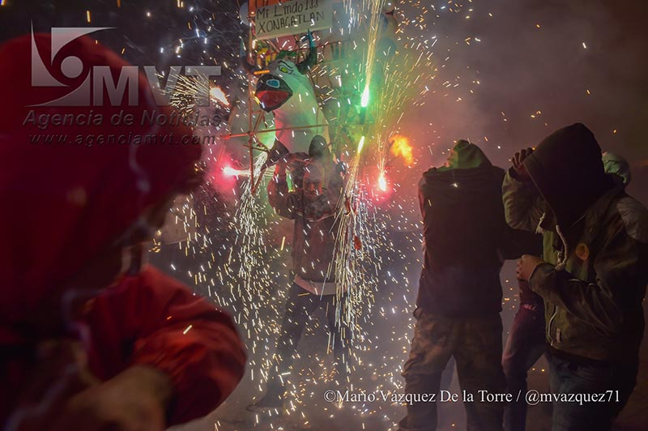
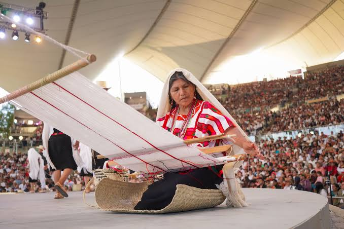

toluca ,lerma


Aquí se detalla la historia y los datos más relevantes de las zonas arqueológicas y canales tradicionales. Un espacio dedicado a mantener vivas nuestras raíces culturales y herencia histórica.
